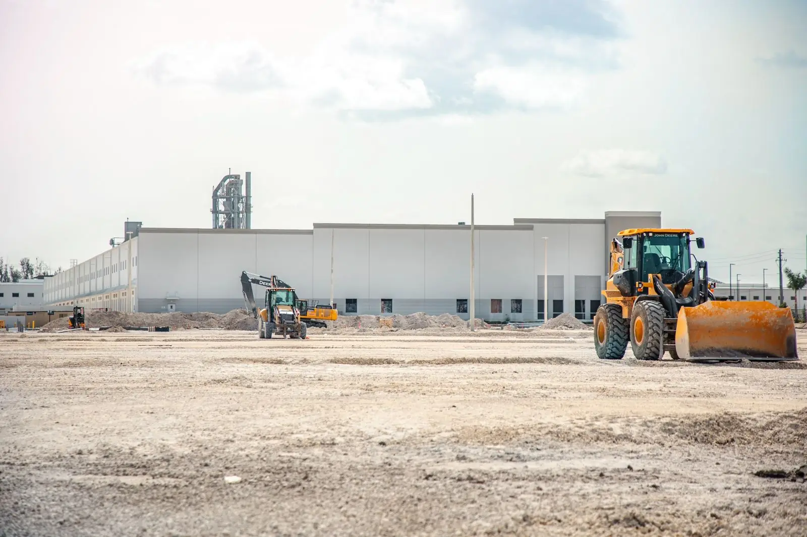
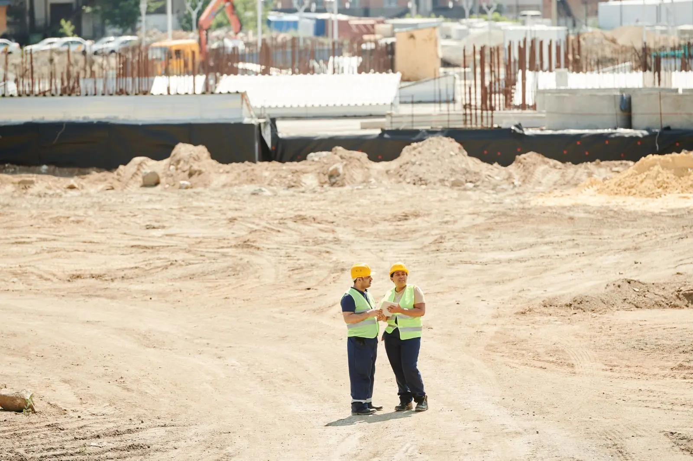

Início / Soluções
S.00 Soluções
Seis soluções, um padrão de engenharia
Do contrato completo ao pacote de estrutura. Compare os modelos de contratação e descubra qual combina com a sua expansão.

01 Soluções
Escolha por onde começar
Cada página explica aplicações, escopo, etapas e o que observar antes de contratar.

Turnkey
Projeto, aprovações, obra e entrega com um único contrato e prazo fechado.
Ver solução
Build to suit
Prédio sob medida pago pelo investidor e alugado pela sua empresa.
Ver solução
Galpões logísticos
Centros de distribuição desenhados a partir do fluxo de carga.
Ver solução
Estruturas metálicas
Projeto, fabricação e montagem de estruturas de aço.
Ver solução
Pré-moldados
Concreto pré-fabricado: obra mais rápida e resistente ao fogo.
Ver solução
Pavimentação
Pátios, vias e acessos dimensionados para tráfego pesado.
Ver solução02 Modelos de contratação
Quem paga, quem projeta, quem responde
A mesma obra pode ser contratada de jeitos diferentes. A tabela resume as diferenças.
Solicitar proposta| Modelo | Escopo da VETRAX | Quem paga a obra | Quem responde pelo projeto | Indicado para |
|---|---|---|---|---|
| Turnkey | Projeto, aprovações, obra e entrega | Cliente (dono do terreno) | Construtora | Quem quer um responsável único |
| Build to suit | Projeto e obra sob medida | Investidor | Construtora, com aval do investidor | Quem não quer imobilizar capital |
| Empreitada global | Obra conforme projeto do cliente | Cliente | Cliente (projeto) e construtora (obra) | Quem já tem projeto aprovado |
| Pacote de estrutura | Estrutura metálica ou pré-moldada | Cliente | Construtora (só a estrutura) | Quem coordena a obra por pacotes |
03 Assistente
Qual modelo serve para a sua empresa?
Três perguntas e o site indica o caminho mais provável. A decisão final sai do diagnóstico com o engenheiro.

04 Próximo passo
Ainda em dúvida entre dois modelos?
Um engenheiro compara os cenários com prazo, investimento e risco para a sua operação.